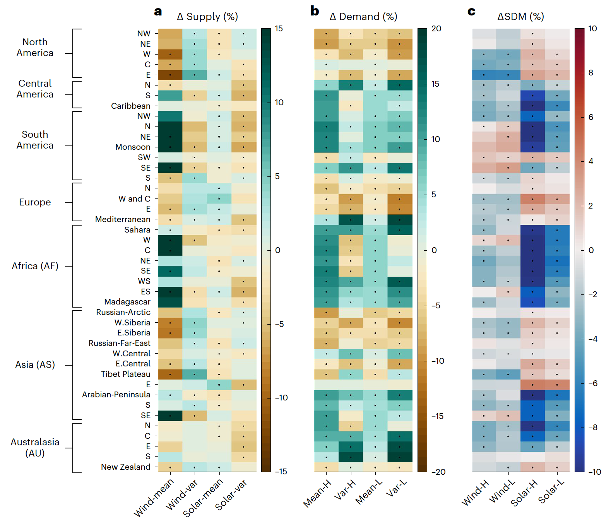

Climate change impacts on planned supply–demand match in global wind and solar energy systems

Climate change impacts on planned supply–demand match in global wind and solar energy systems
Laibao Liu*, Gang He, Mengxi Wu*, Gang Liu, Haoran Zhang, Ying Chen, Jiashu Shen, Shuangcheng Li
Nature Energy (2023)
DOI: 10.1038/s41560-023-01304-w
Abstract
Climate change modulates both energy demand and wind/solar energy supply, but a globally synthetic analysis of supply-demand match (SDM) is lacking. Here we use 12 state-of-the-art climate models to assess climate change impacts on SDM, quantified by the fraction of demand met by local wind or solar supply. For energy systems with varying dependence on wind or solar supply, up to 32% or 44% of non-Antarctic land areas, respectively, are projected to experience robust SDM reductions by the end of this century under an intermediate emission scenario. Smaller and more variable supply reduces SDM at northern middle-to-high latitudes, whereas reduced heating demand alleviates or reverses SDM reductions remarkably. By contrast, despite supply increases somewhere at low latitudes, raised cooling demand reduces SDM substantially. Changes in climate extremes and climate mean make size-comparable contributions. Our results provide early warnings for energy sectors in climate change adaptation.
Links
Published paper
Open Access pdf
Zenodo: Code and Data
Twitter Thread
Climate change impacts energy supply, it impacts demand too, what about supply and demand balance?
— Gang He (@DrGangHe) July 24, 2023
Our new @NatureEnergyJnl paper mapped out how climate change impacts wind solar supply demand match globally.
Paper: https://t.co/TgyvQW2GOc
Code: https://t.co/EsM3wauMKZ pic.twitter.com/RTT40YoZNJ
Citation
@article{liu2023,
author = {Liu, Laibao and He, Gang and Wu, Mengxi and Liu, Gang and
Zhang, Haoran and Chen, Ying and Shen, Jiashu and Li, Shuangcheng},
title = {Climate Change Impacts on Planned Supply–Demand Match in
Global Wind and Solar Energy Systems},
journal = {Nature Energy},
date = {2023-07-24},
url = {https://www.nature.com/articles/s41560-023-01304-w},
doi = {10.1038/s41560-023-01304-w},
langid = {en}
}